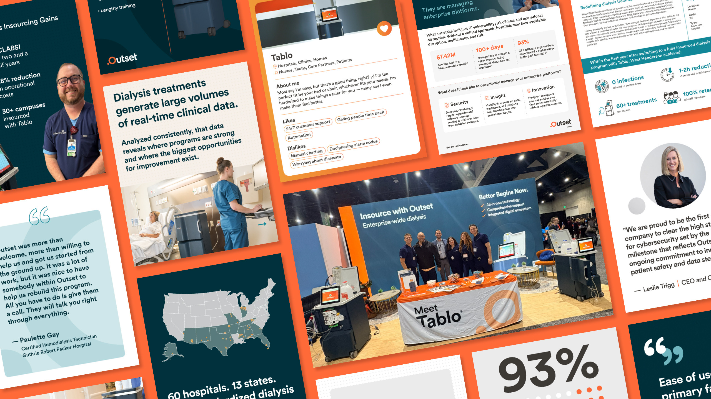
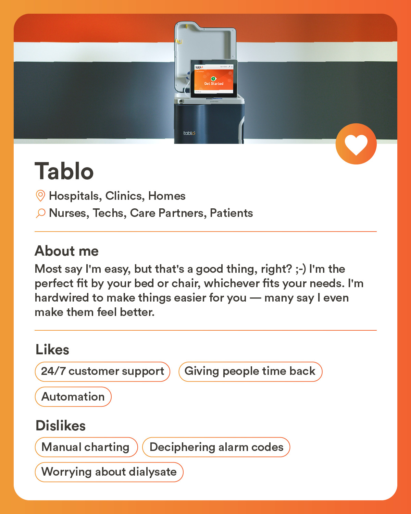
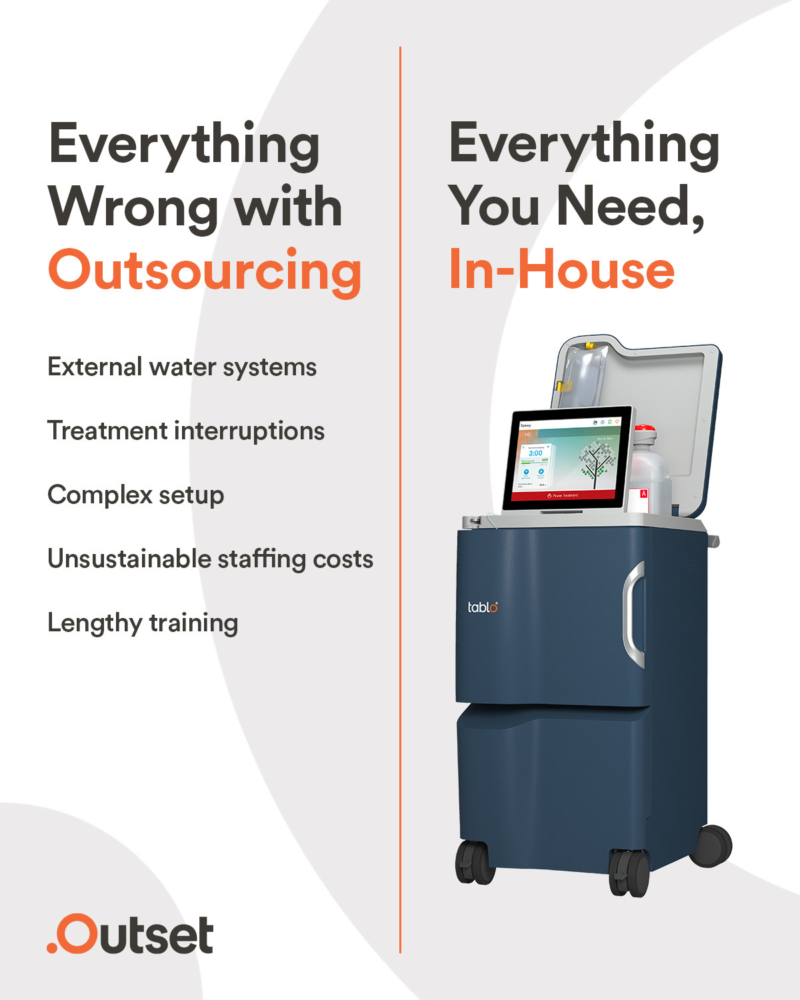
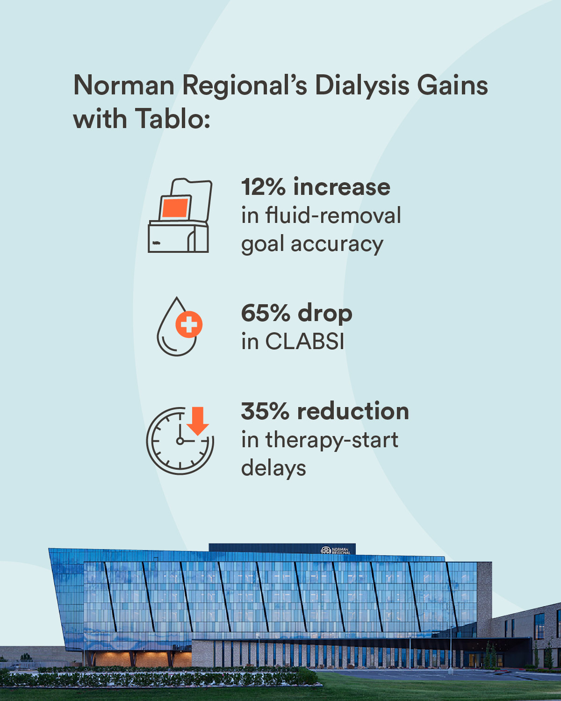
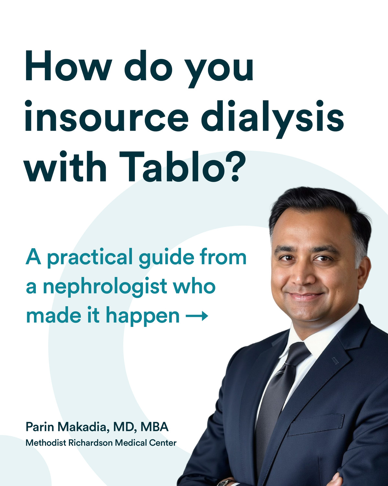
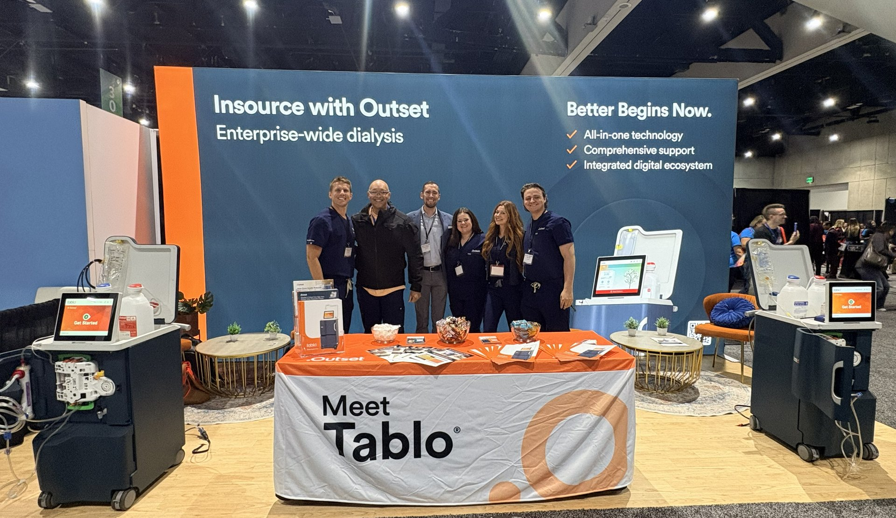

In the summer of 2019, Outset Medical was ready to be known. Tablo — their FDA-cleared dialysis system, designed to be dramatically easier to learn, use, and deploy than anything else in the category — had shipped to its first customers, and early implementation results were widely positive, so the company was ready to start driving demand. Up to that point, Outset had been very quiet online — next to no social media presence, very little product-oriented storytelling, and a landing page in place of a full website. They needed an audacious agency partner to help build their brand from the ground-up, tell the early stories of customer successes to drive belief in their product, and shore up a communications infrastructure that would be ready to respond to whatever might come their way. What began with immersive discovery, turned into a deep phase of strategic groundwork, and culminated in the start of a partnership for implementation that continues to this day.
Little did we know when we shot our first customer story on-site at a hospital in Decatur, Alabama in late fall 2019 that our carefully mapped out plan for our 2020 content roadmap would be upended by a global pandemic that, for Outset, ended up creating more opportunities than roadblocks. Quickly, as Covid-19 upended plans for further video shoots, we saw an uptick in customer need for Outset's Tablo Hemodialysis System, and a flurry of output from the clinical sales team to deploy the systems in every hard-hit area that needed them most.
Ultimately, we threw out the 2020 content strategy and met the moment head-on. Tablo was built for exactly this kind of crisis: give a hospital an outlet and a faucet, and a converted cafeteria becomes a dialysis unit; give an ICU nurse a couple hours of training on this easy-to-use device, and they're treating patients with confidence. The story was no longer a polished product launch — it was a dauntless company doing whatever it took to get its technology to the systems, providers, and patients who needed it most.
Instead of meticulously planned shoots, we took to the ground with an all-out user-generated content (UGC) play, remotely training the Outset team in best practices for content gathering to generate a steady pipeline of stories from the trenches showing our effectiveness at supporting deeply overwhelmed healthcare systems. This ultimately laid the foundation for the company's IPO in September 2020, riding the success of their Covid-19 response to demonstrate to investors that Tablo was a product the market desperately needed, and Outset was a company poised to deliver excellent service in times of need.
Since then, we have continued to support Outset through its evolution as a public company without surrendering the distinctive voice that suits a technology this different. Seven years on, we're still a critical arm of the marketing team and the partner they call to meet whatever moment comes next.





